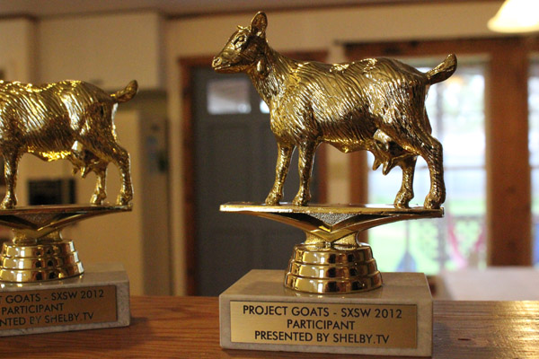
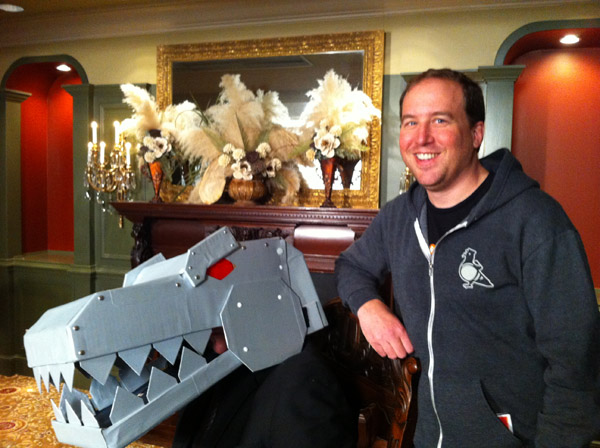
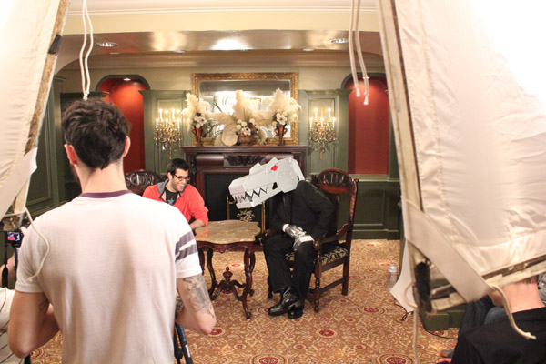
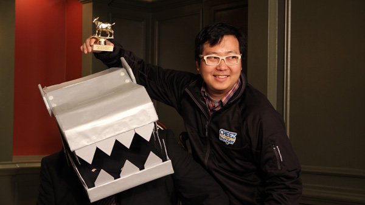
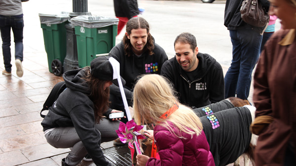
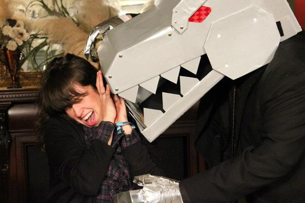

GOATS
Who is FAKE GRIMLOCK?
Maybe you’ve seen him featured on the blogs of Fred Wilson, Brad Feld, and Eric Ries. Maybe you’ve seen his fans tweet during a #BeOnFire chat. Maybe you even backed his oversubscribed Kickstarter campaign… But we guarantee, you’ve never seen him in person… until now.
That’s right. We heard dinosaurs like goats, so we brought FAKE GRIMLOCK to SXSW and filmed the whole thing, in (Fake) Grimlock Obliterates Austin Texas (with) Shelby.
SXSW
- 
- 
- 
- 
- 
- 
- View more...